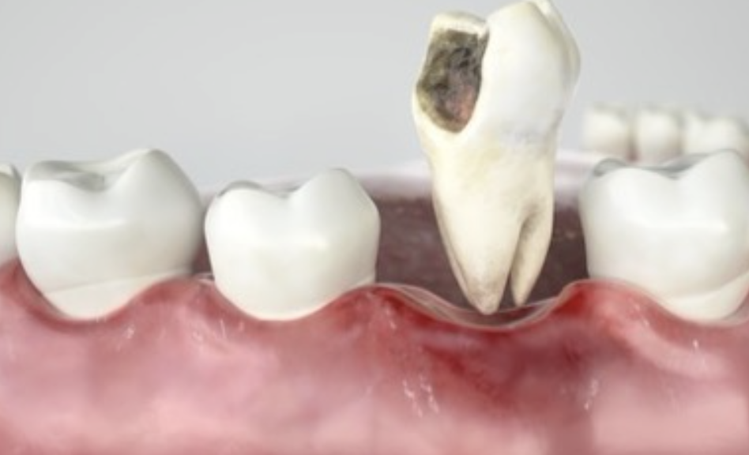
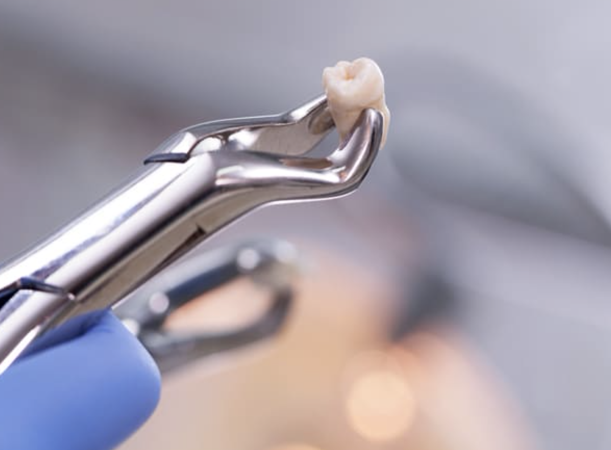

Extracciones
Extracciones|  Imagen representativa sacada de Orto Dental |
||
| Es la cirugía oral que se ocupa de extracción de un diente o porción del mismo, mediante unas técnicas e instrumental adecuado. Es el acto quirúrgico mediante el cual se extraen los dientes de sus alvéolos con el menor trauma posible. | ||
|  Imagen representativa sacada de Gaceta Dental |